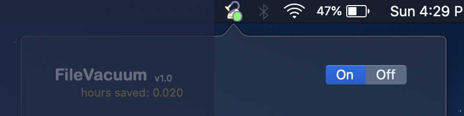
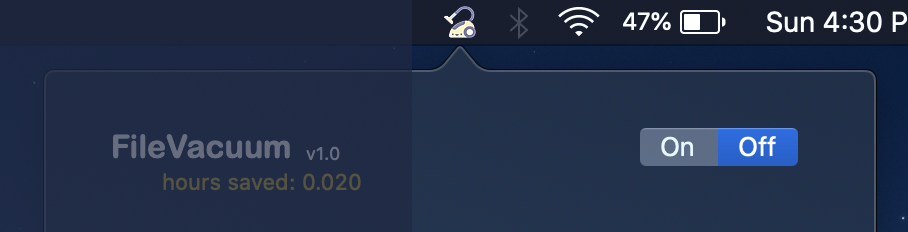
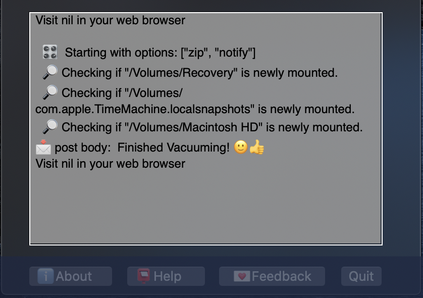
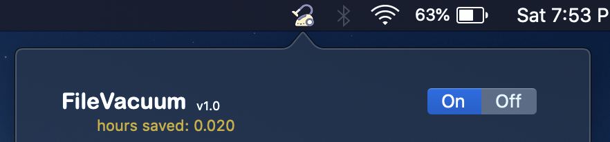
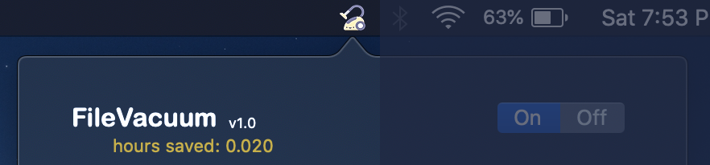
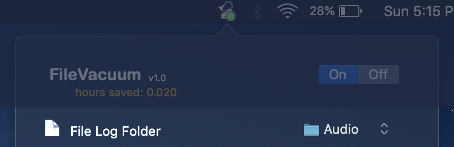
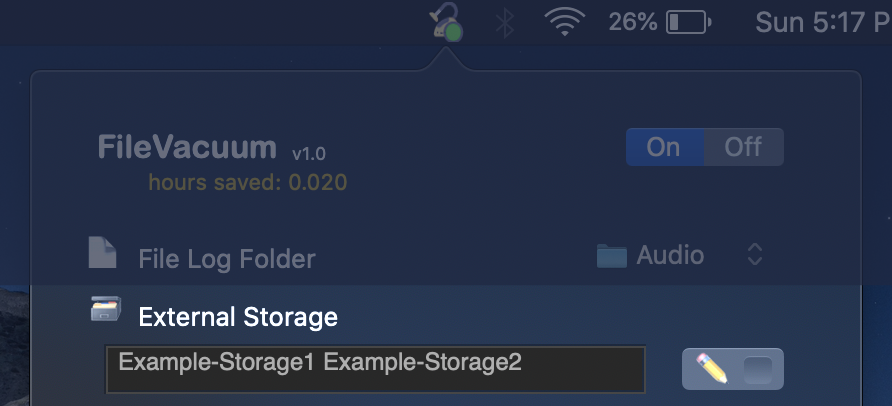
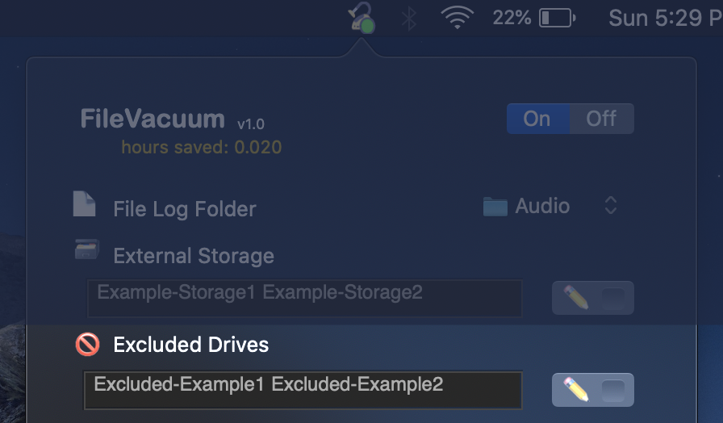
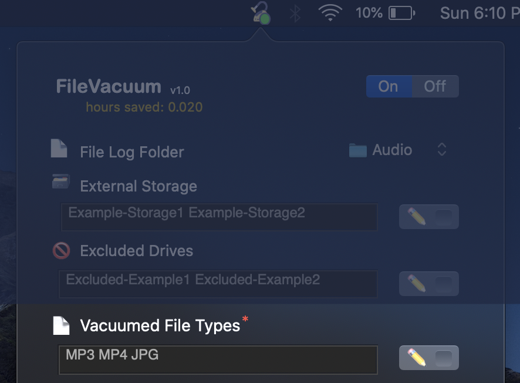
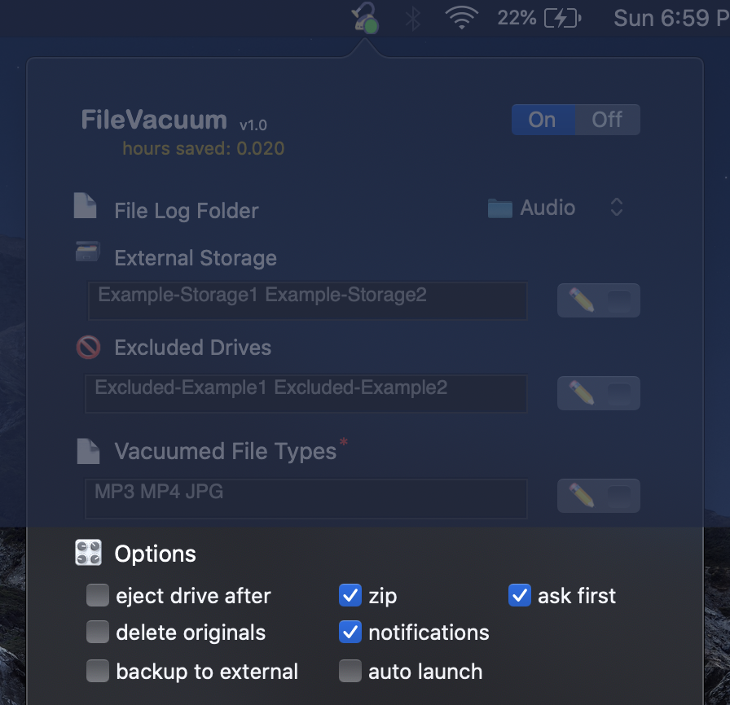

FileVacuum is a macOS application that helps you automatically offload file from your recording devices (phones, cameras, recorders).
It runs in the background and waits for a new device to connect to your laptop at the default file path of “/Volumes”
Use the side menu to choose which part of the application you’d like to learn more about.
The On-Off Toggle controls when FileVacuum is “running”, meaning, when it’s actively looking for newly connected devices (phones, cameras, recorders) to vacuum. When FileVacuum is "On" it looks like this showing a green circle in the toolbar icon:

When FileVacuum is "Off" it looks like this:

When FileVacuum is running, you’ll also see the underlying program’s output show up in the “Program Output” box below:

The program version keeps track of what version of the program you are running and can be used to assist in Support queries.
When you email support@filevacuum.com, please include the version of FileVacuum in the email.
You can see version in the program’s header:

and in the “About popup”:

In both of the above screenshots we see the version is “1.0”.
This is the number of hours using FileVacuum has saved you.
In the below picture the “hours saved” is: “0.020”

The "Hours Saved" total is calculated by timing the vacumming's copy/zipping of files from attached devices and then adding 8 seconds.
This simulated 8 seconds accounts for the time it would take to open the attached drive's folder, open the folder inside with the record files, click to copy them, click to the local computer folder where you want to paste them, and then finally right click to actually paste them into that local folder.
This is the folder on your computer where FileVacuum will copy or zip the files it vacuums off of your attached devices (cameras, phones, recorders).
Simply click the File Panel on the right of “📄File Log Folder” to select this file path.

Here’s an example of what the files may look like on your Mac computer after being vacuumed off the connected device:

External Storage is where you set the external storage drives you’d like FileVacuum to offload from your computer to another storage device.
offload
💻
Local Computer
→
💽
External Storage device
( computer running FileVacuum ) ( larger longer term storage )
To edit the “External Storage” text field, unlock it first by checking the “ ✏️ ” checkbox button:

Each “External Storage” path is separated by a single space.
You find the name of a drive by attaching it and then viewing the name in the Finder. Below you see the attached drive name is "Untitled":

Attached drives will also show on the Desktop with the “Drive icon” as seen below:

In both of these screenshot examples the name of the attached external drive is “Untitled”. Many audio recorders don’t come with named drives. It’s much better to name these drives in a descriptive way.
Excluded Drives is where you set the attached drives you don't want FileVacuum to vacuum files from. An example of this might be a drive that you don't want to use as an external drive and also do not want to be vacuumed. To edit the Excluded Drives text field, unlock it first by checking the “ ✏️ ” checkbox button:

Excluded Drives are saved as the name of the drive separated by a single space if there is more than one.
Vacuumed File Types are where you set the different file types you'd like to be vacuumed from attached drives. MP3 MP4 and JPG are the default values for this setting:

Vacuumed File Types required and are saved as the name of the file type separated by a single space if there is more than one.
Options allow you to control FileVacuum's behavior:

If a Option is changed while FileVacuum is vacumming,
a "Pending Restart..." message will be displayed and FileVacuum will be restarted after vacuuming finishes.